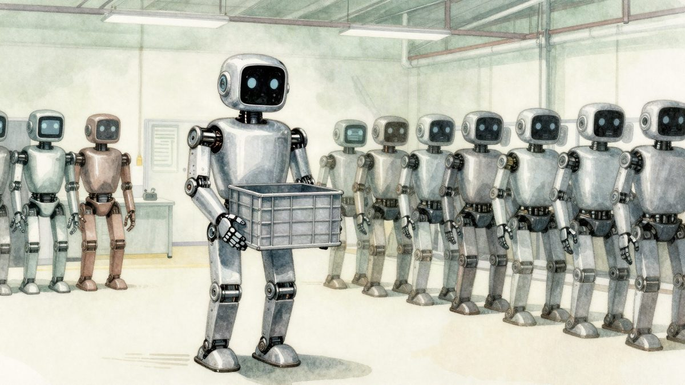

Rabljeni avionski motori postaju generatori za AI data centre: xAI već ima 8 komada od 50 MW

xAI Elona Muska instalirao je 8 generatora napravljenih od jezgri umirovljenih avionskih motora, a Crusoe je naručio 13 takvih jedinica ukupne snage 650 MW. Data centri posežu za njima jer na priključak na mrežu čekaju u prosjeku 61 mjesec. Cijena i dostupnost u Europi nisu poznate.
xAI Elona Muska je instalirao 8 generatora napravljenih od jezgri umirovljenih avionskih motora. Opremu isporučuje američki ProEnergy, a riječ je o jezgrama motora General Electric CF6-80C2, koji se koristio na Boeingu 747. Prema izvoru, xAI je novo ime tvrtke SpaceXSI.
ProEnergy motore rastavlja, pregledava i obnavlja, a zatim dodaje novu pogonsku turbinu, generator i upravljački sustav. Tako nastaje generator PE6000 bruto snage oko 50 MW, koji se pokreće za samo pet minuta. Američki developer data centara Crusoe je u travnju 2026. naručio 13 takvih jedinica ukupne snage 650 MW, a isporuka je predviđena prije ljeta 2027.
U istom poslu sudjeluje i kineski Jerry Holdings iz Yantaija. S američkim FTAI-jem, koji iznajmljuje avionske motore, radi na prenamjeni motora CFM56 s Boeinga 737 i Airbusa A320. FTAI razvija tehnologiju prepravke, a Jerry projektira, proizvodi i integrira sustav za proizvodnju struje u obliku mobilnih jedinica. Njihov zajednički pothvat J&F Power Systems je u srpnju 2026. potpisao petogodišnji okvirni ugovor s jednim međunarodnim cloud pružateljem i dobio prvu narudžbu od 1,465 milijardi dolara (oko 1,3 milijarde eura). Isporuka je planirana do studenoga 2027.
Zašto data centri sami proizvode struju
Razlog je nedostatak električne energije. Prema izvješću Lawrence Berkeley National Laboratory iz lipnja 2026., američki data centri potrošili su 2024. oko 192 TWh, a to je 4,7 posto ukupne potrošnje u zemlji. Do 2030. se očekuje 649 TWh i 11,8 posto, a u scenariju brzog rasta čak 843 TWh i 15,3 posto.
Data centar se može izgraditi brzo, ali priključak na mrežu traje. Za projekte koji su u komercijalni rad ušli 2025. medijan od prijave do pokretanja bio je 61 mjesec, dakle više od pet godina. Redovi za klasične plinske turbine također su dugi, pa developeri posežu za motorima koji već postoje.
Američka uprava za energetske informacije (EIA) je u siječnju 2026. procijenila da bi se iz motora u vojnom groblju zrakoplova u bazi Davis-Monthan u Arizoni teoretski moglo dobiti do 40.000 MW instalirane snage, oko 110 posto postojećih kapaciteta te savezne države.
Ograničenja
U praksi motora u grobljima zrakoplova često nema. Tvrtke za razgradnju zrakoplova prve skidaju motore, a oni su često vrijedniji od ostatka trupa. Dijelovi se koriste za popravak drugih zrakoplova. Izvršni direktor FTAI-ja izračunao je u veljači da se u svijetu godišnje rastavlja oko 400 motora CFM56 i da bi mu za godinu dana poslovanja trebalo njih 100, što je četvrtina ukupne ponude.
Potrebna je i rezerva. Za data centar od 1 GW s jedinicama od 50 MW dovoljno bi bilo 20 komada, ali bez ikakve redundancije. Prema procjeni Međunarodne agencije za energiju, instalirani kapacitet treba iznositi 1,3 do 1,7 GW, što je 26 do 34 jedinice. Šest dodatnih jedinica znači oko 750 milijuna dolara dodatnog ulaganja (oko 650 milijuna eura).
Tu je i gorivo. Developeri biraju lokacije uz plinovode, a CloudBurst se s Energy Transferom dogovorio o zajedničkom traženju lokacija uz plinske cjevovode. Problem su i emisije. Prema dozvolama iz Mississippija, ovih 8 xAI-jevih jedinica smije ispuštati ugljikov monoksid dvostruko većom brzinom od ostalih jedinica na istoj lokaciji.
Cijena i dostupnost u Europi nisu poznate.
Izvor: cnBeta
Povezani članci
 Moždani implantat vratio govor pacijentima s ALS-om: razumljivost do 94 posto, jedna pacijentica ponovno pjeva15. studenoga 2026.
Moždani implantat vratio govor pacijentima s ALS-om: razumljivost do 94 posto, jedna pacijentica ponovno pjeva15. studenoga 2026. KG Motors razvija mibot: jednosjed na struju duljine 2,5 metra za oko 5.700 eura12. studenoga 2026.
KG Motors razvija mibot: jednosjed na struju duljine 2,5 metra za oko 5.700 eura12. studenoga 2026.
Musk: Tesla Optimus će se najvjerojatnije samo iznajmljivati, a ne prodavati7. studenoga 2026.